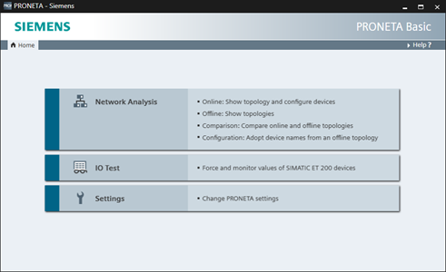
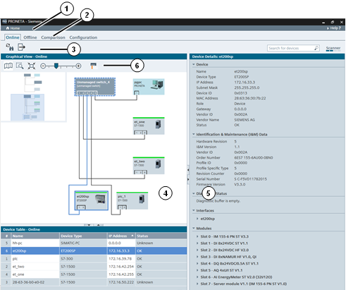
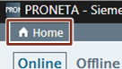
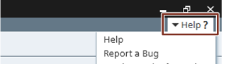

|
注意 |
在本文档范围内，使用术语“设备”表示“网络参与者”、“节点”或“组件”。任何使用指定 IP 地址进行 PROFINET 通信的设备都被视为“设备”(device)。 |
PRONETA Basic 设计用于完成以下“任务”之一。这些任务目前包括：
调整软件 设置
可从“主页”(Home) 画面中选择任务，并可在 PRONETA Basic 操作期间随时返回“主页”(Home) 画面选择其它任务。

画面布局
通常，PRONETA Basic 窗口分为以下几个部分：
顶部标题栏 (1)
模式栏 (2)，允许在“模式”或所选任务的各个步骤之间切换
功能栏 (3)，为当前模式提供特定功能
一个或多个窗口，具有网络组态 (4) 的图形视图或如下相关信息表 (5) 如设备表）
最后，“图形视图”(Graphical Views) 包含一个工具栏 (6)，设计用于根据所选模式执行特定操作

根据所选任务和模式，“图形视图”(Graphical Views) 和“设备表”(Device Tables) 的功能栏和上下文菜单提供的功能不同。有关详细信息，请参见 PRONETA Basic 用户指南第 3 章的相关部分。
可通过在相应方向上拖动窗格之间的边框来更改视图的相对大小。可使用窗格边框上的“►”、“◄”、“▲”和“▼”符号显示或删除窗格。
标题栏在 PRONETA Basic 运行时始终可见，包含两个控制元素：
标题栏左侧的“主页”(Home) 按钮。单击此按钮会始终将 PRONETA Basic 返回到起始画面。

标题栏右侧的“是否需要帮助？”(Help?) 按钮。单击此按钮会打开一个菜单，包含以下三个命令：
“帮助”(Help) 用于打开或关闭窗口右侧的框，该框显示上下文特定的帮助。（只要按下“F1”功能键即可提供相同的功能。）有关更多详细信息，请参见 帮助视图。
“报告错误”(Report a Bug) 用于收集有关 PRONETA Basic 当前状态的信息，并提示用户向西门子提交错误报告，以便后续提高 PRONETA Basic 性能。
“版本和信息”(Version and Information) 用于打开一个小窗口，其中包含正在运行的 PRONETA Basic 版本的相关信息。还可以在其中手动检查 PRONETA Basic 的更新版本。

如果在 PRONETA Basic 中遇到错误，请通过标题栏右侧的“是否需要帮助？”(Help?) 按钮启用错误报告机制。
PRONETA Basic 将创建其当前状态的诊断转储，并准备一封附有该转储的电子邮件以便随后发送至 PRONETA Basic 支持团队。（创建转储需要一段时间。）
如果用户在发送消息之前向其中添加更多信息，如确切的问题和错误情况以及可能问题的详细联系信息等，则将为 PRONETA Basic 的持续改进提供支持。